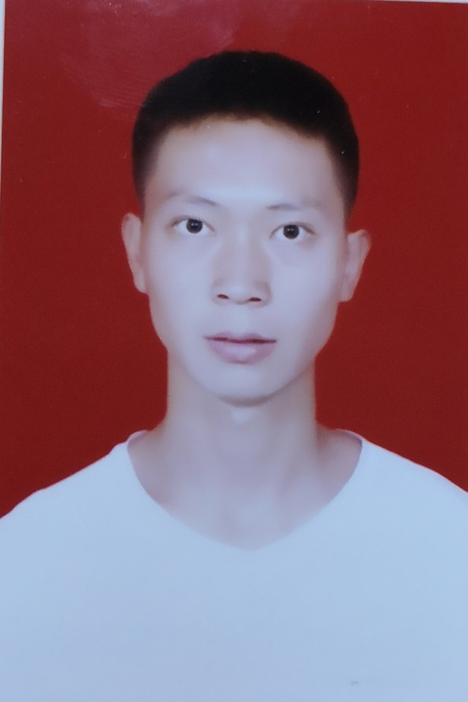

记录我的人生轨迹， 记录我的感动，记录心中那尚未崩坏的部分。关于我

姓名：李卓
学号：201908050210
姓名：李卓
学号：201908050210
个人简介：
性别:男，爱好:上网，旅行。00后，忽冷忽热的天蝎座，喜欢一群人的狂欢，也享受一个人的孤单。性格外冷内热、叛逆，不愿意遵守规则。有时候也容易得罪人。 喜欢运动，爱打篮球、乒乓球。还喜欢听歌和唱歌，不过唱歌水平就不值得一提啦!我有一个抱负：希望经过自己的努力，若干年后，当家人需要我的时候，我可以给予强有力的帮助，而不是无能为力。 此外，喜欢旅行的我，希望将来某一天可以和自己心爱的人游遍中国的名胜古迹，畅游在大自然的美景之中。